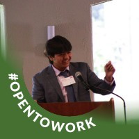

About
Amruth Annavaram is a dedicated and passionate sophomore at the Rose-Hulman Institute of Technology, pursuing a Bachelor of Science in Computer Science. With a robust foundation in programming languages such as Python, Java, HTML, CSS, and JavaScript, Amruth combines academic excellence with practical experience. His coursework, including Object Oriented Programming, Web Programming, and Data Structures/Algorithm Analysis, has equipped him with a versatile skill set, positioning him to soon be a dynamic contributer to the field at large.
Amruth's enthusiasm extends beyond the classroom into real-world applications. As a Hardware Engineering Intern at SiPanda, he developed custom software images for RISC-V architecture hardware, showcasing his technical prowess and problem-solving abilities. His international internship at the Agastya International Foundation in India added a global perspective, where he actively contributed to the MyTree program through graphic design and video editing. Amruth's commitment to excellence isn't limited to technical domains; his six-month role as the City and Farmers Market Manager for Compost Culture underscores his leadership and communication skills. A well-rounded individual, Amruth is not just a computer scientist but a proactive contributor to various spheres, reflecting a commitment to innovation, collaboration, and continuous learning.